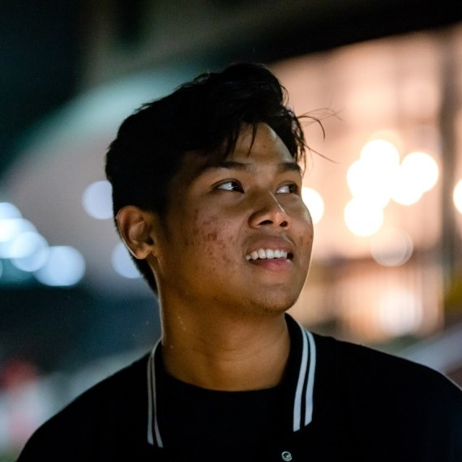

Hey,
I'm Razi

I'm a prospective
Developer
Data Scientist
ANU Alumni
University Student by day, developer by night.
I'm a young, ambitious Information Technology Student with experience in software development and data analysis.
Looking to step into the real world and keen on making an impact on people.
Let's start with you.
What I've done
{% include masonryItem.html
title = "B Information Technology"
description = "Australian National University"
id = "degree"
imgURL = "assets/images/anu.png"
year = "2017 - Ongoing"
text = "
Expected Graduation with Honours in December 2020.
Majoring in Software Development and Minoring in IT in new Media.
Currently undertaking Honours Project in Mixed Reality Data Visualisation"
stack = "Haskell, Java, Ada, Concurrency, Data Science, Machine Learning, Project Management, Agile, Systems Engineering"
modalImgURL = "assets/images/batikANU.jpg"
sourceURL = "https://cecs.anu.edu.au/study/meet-our-students/septian-razi"
%}
{% include masonryItem.html
title = "Vacation Scholar"
description = "CSIRO's Data61"
id = "csiro"
imgURL = "assets/images/csiroVacationScholar.jpg"
year = "2020"
text = "
For the 3 month-long program, I had developed an optimised and insightful visualisation of CSIRO pedigree data containing over 45,000 data entries into an interactive graph in 3D space.
I had modularised the software to function on multiple different hardware technologies including cutting-edge hardware such as the Hololens 2, Vive Pro, and Oculus Quest.
"
stack = "C#, Unity, Mixed Reality Toolkit, Git, Confluence"
sourceURL = "septianrazi.com"
modalImgURL = "assets/images/DemoGifs/HololensXRGenomics.gif"
sourceURL = "work.html"
%}
{% include masonryItem.html
title = "Project Manager"
description = "UI Prototype with Accenture & ANU Techlauncher"
id = "accenture"
imgURL = "assets/images/uiPrototype.jpg"
year = "2019"
text = "
Working with clients from Accenture, I lead and managed the development of a UI Prototype optimised for fatigued and high-risk workers in vehicles.
This involved managing a team of seven in delivering research, UI prototypes and testing alongside communicating with stakeholders.
Developed a Testing Environment using React alongside a basic UI Prototype for a Vehicle Dashboard.
"
stack = "React, Firebase, Agile, Confluence, Git"
modalImgURL = "assets/images/DemoGifs/accentureUIPrototype.gif"
sourceURL = "work.html"
%}
{% include masonryItem.html
title = "Front-End Developer"
description = "API Test Client with Xero & ANU Techlauncher"
id = "xero"
imgURL = "assets/images/anuTechlauncher.jpg"
year = "2019"
text = "
As part of my first project with ANU Techlauncher, we developed an API Test Client for Xero Canberra using Agile Methodologies.
I spearheaded the Iterative Design Process by creating mock-ups, performing User Evaluation Testing and documentation.
I had also assisted the Front-End developers in translating this design into a workable product using React.
"
stack = "React, Node.JS, Powerpoint, Git"
sourceURL = "work.html"
%}
{% include masonryItem.html
title = "Loading-Icons.p5"
description = "Written in p5 and Javascript"
id = "loadingIconP5"
imgURL = "assets/images/loadingIcon.PNG"
year = "2019 - Ongoing"
text = "
Side-project combining different cyclical loading animations developed using javascript and p5.
Using different combinations of trigonometric functions on the translation, scaling and rotation on primitive p5 shapes, complex and visually appealing loading animations emerge.
Changing the rate of change and opacity of background can offer further aesthetic animations.
"
stack = "JavaScript, p5.js"
modalImgURL = "assets/images/DemoGifs/loadingIcon.gif"
sourceURL = "https://github.com/septianrazi/Loading-Icons"
%}
{% include masonryItem.html
title = "Website Assistant Developer"
description = "3A Institute"
id = "3ai"
imgURL = "assets/images/website3ai.PNG"
year = "2019 - Ongoing"
text = "
I had worked on the legacy codebase of the old 3ai website and developed it's new look.
I implemented this design overhaul as per the given brand guidelines, maximising code reuse while developing a more maintainable and clean codebase.
Still actively maintaining website.
"
stack = "HTML, CSS, JavaScript"
modalImgURL = "assets/images/DemoGifs/3aiWebsite.gif"
sourceURL = "https://3ainstitute.cecs.anu.edu.au/"
%}
{% include masonryItem.html
title = "ATO for Individuals Runner Up"
description = "GovHack 2019"
id = "govhack2019"
imgURL = "assets/images/govHack.jpg"
year = "2019"
text = "
As part of a team of five, we developed an innovative product that allowed people to determine job prospects and future growth within geographic constraints.
We utilised multiple publicly accessible data and developed a machine learning model to predict jobs in the future, connecting it with a web front-end via Flask.
As a result of our 48 Hours of Coding, we were shortlisted for the Western Australia Awards and received Runner Up for the International Awards.
"
stack = "HTML, CSS, JavaScript, p5.js, Python, Flask"
video = "dFtrMazRGZs"
sourceURL = "https://cecs.anu.edu.au/news/hacking-your-career"
%}
{% include masonryItem.html
title = "Casual/Sessional Academic"
description = "ANU Research School of Computer Science"
id = "tutor"
imgURL = "assets/images/armDiscoboard.jpg"
year = "2019 - Ongoing"
text = "
I have tutored assembly programming and computer architecture (for COMP2300), Web Development and Design (for COMP1710) and Graphics (COMP1720) within ANU.
With class sizes ranging from 10 - 40 Students, flexibility and adaptability is highly important when catering to multiple students from different backgrounds and capabilities.
I also collaborate closely with my lecturers and other tutors in planning of the course and marking.
"
stack = "ARM Assembly, HTML, CSS, JavaScript, p5.js"
modalImgURL = "assets/images/teaching.jpg"
sourceURL = "https://cs.anu.edu.au/courses/comp1720/people/"
%}
{% include masonryItem.html
title = "Space Crusaders Android Game"
description = "Written in Java"
id = "spaceCrusaders"
imgURL = "assets/images/spaceCrusaders.png"
year = "2018"
text = "
Space crusaders is one of the first mobile applications I made.
As part of ANU's Software Design Methodologies course (COMP2100), I worked alongside 3 other friends
and came up with a basic video game, implementing ideas learnt from the course including
design patterns and test driven development.
"
stack = "Java, Android Studio, Git"
sourceURL = "https://github.com/septianrazi/SpaceCrusaders"
%}
{% include masonryItem.html
title = "President"
description = "ANU Indonesian Students Association"
id = "anuisa"
imgURL = "assets/images/anuisa.jpg"
year = "2018"
text = "
I lead a team of 15 committee members in creating events and projects throughout the year, representing over two hundred Indonesian Students at the ANU.
Together, we held and planned our large annual event “Indonesian Folk Market” involving intense planning, effectively delegating around 50 volunteers and collaborating with the Indonesian Embassy and other societies.
This resulted in a hugely successful event with over 300 participants.
"
video = "yH5n03Vz-9o"
sourceURL = "https://www.anuisa.com/"
%}
{% include masonryItem.html
title = "Senior Resident"
description = "Fenner Hall, ANU"
id = "fennerSR"
imgURL = "assets/images/fennerHallLeadership2.jpg"
year = "2019 - Ongoing"
text = "
After having lived in Fenner Hall since day one of university, I am currently a Senior Resident here.
I operate as a support figure for the 42 residents on my floor, offering pastoral care and community building efforts.
I collaborate closely alongside a team of up to 40 other leaders, ensuring an inclusive and positive environment within the hall.
I am also involved in the International Portfolio, in which I help better assimilate International Students within our community.
"
modalImgURL = "assets/images/commencement.jpg"
sourceURL = "work.html"
%}
{% include masonryItem.html
title = "Best Solution for Limited Resources"
description = "ANU Innovation Challenge"
id = "anuInnovationChallenge"
imgURL = "assets/images/anuInnovationChallenge.jpg"
year = "2018"
text = "
As part of the ANU Innovation Challenge, we were tasked to design innovative solutions to tackle water shortages around the world.
We proposed a design for a smart water monitoring system with social and gamification aspects to it,
allowing users not only to monitor their usage, but incentivising further water usages via social and gamification features.
We were awarded the best solution for this challenge.
"
sourceURL = "https://www.facebook.com/pg/InnovationChallengeANU/photos/?tab=album&album_id=2156893164541540&ref=page_internal"
%}
{% include masonryItem.html
title = "Fenner Survey Analytics"
description = "Fenner Hall Symposium, ANU"
id = "fennerSymposium"
imgURL = "assets/images/fennerSymposium.PNG"
year = "2019"
text = "
I conducted an in-depth Data Analysis of our Annual Mid-Year Survey Data collected from 2013.
I performed Data Cleaning and Integration on over ten datasets with more than 200 entries each,
and analysed the data using data mining techniques such as Frequent Pattern Mining.
From this result, I was able to provide statistical evidence that a certain demographic was being less engaged within the hall.
This resulted in actual concrete changes to address this issue.
"
stack = "Python, Jupyter Notebook, Pandas, Scikit-learn, Excel, R, Rattle"
sourceURL = "work.html"
%}
Skills
- JavaScript
- Java
- Python
- C#
- Haskell
- Python
- Pandas
- Jupyter Notebook
- Excel
- MySQL
- HTML
- CSS
- JavaScript
- Sass
- Jekyll
- React
- Git
- Windows
- Bash
- Unity
- Visual Studio
- IntelliJ IDEA
- Confluence
- Kanban
- Slack
- Project Management
- Agile
- Technical Writing
- Canva
- Beatboxing
- Minecraft